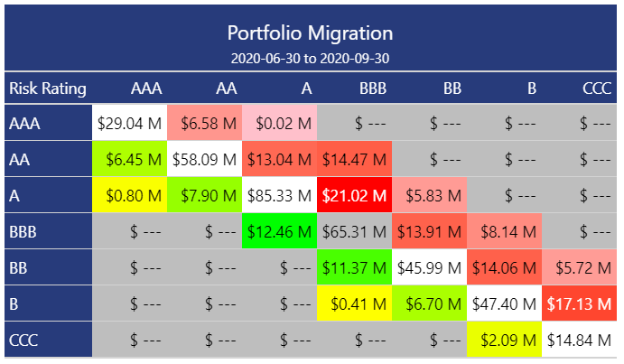

The goal of {migrate} is to provide users with an easy set of tools for building state transition matrices.

Methodology
{migrate} provides an easy way to calculate absolute or percentage migration within a credit portfolio. The above image shows a typical credit migration matrix using the absolute approach; each cell in the grid represents the total balance in the portfolio at 2020-06-30 that started at the Risk Rating represented on the left-hand vertical axis and ended (at 2020-09-30) at the Risk Rating represented on the upper horizontal axis of the matrix. For example, $6.58M moved from a Risk Rating AAA at 2020-06-30 to a Risk Rating AA at 2020-09-30.
While the above, absolute, migration example is typically more of a reporting function, the percentage (or probabilistic) methodology is often more of a statistical modeling exercise, often used in credit portfolio risk management. Currently, this package only supports the simple “cohort” methodology. This estimates the probability of moving from state i to state j in a single time step, echoing a Markov process. We can visualize this in a matrix, for a credit portfolio with N unique, ordinal states:

Installation
You can install the released version of {migrate} from CRAN with:
install.packages("migrate")And the development version from GitHub with:
# install.packages("devtools")
devtools::install_github("ketchbrookanalytics/migrate")Practical Usage
{migrate} currently only handles transitions between exactly two (2) timepoints. Under the hood, migrate() finds the earliest & latest dates in the given time variable, and filters out any observations where the time value does not match those two dates.
If you are writing a SQL query to get data to be used with migrate(), the query would likely look something like this:
# -- Get the *State* risk status and *Balance* dollar amount for each ID, at two distinct dates
# SELECT ID, Date, State, Balance
# FROM my_database
# WHERE Date IN ('2020-12-31', '2021-06-30')By default, migrate() drops observations that belong to IDs found at a single timepoint. However, users can define a filler state so that IDs with a single timepoint are not removed but rather migrated from or to this filler state. This allows for more flexible handling of such data, ensuring that no information is lost during the migration process. Check Handle IDs with observations at a single timepoint for more information.
Example
First, load the package using library()
The package has a built-in mock dataset, which can be loaded into the environment like so:
| customer_id | date | risk_rating | principal_balance |
|---|---|---|---|
| Customer_1001 | 2020-06-30 | A | 915000 |
| Customer_1001 | 2020-09-30 | A | 1328000 |
| Customer_1002 | 2020-06-30 | AAA | 979000 |
| Customer_1002 | 2020-09-30 | AAA | 354000 |
| Customer_1003 | 2020-06-30 | BBB | 1400000 |
| Customer_1003 | 2020-09-30 | BBB | 356000 |
Note that an important feature of the mock_credit dataset is that there are exactly two (2) unique values in the date column variable; if the time argument passed to migrate() has more than two (2) unique values, the function will throw an error.
unique(mock_credit$date)
#> [1] "2020-06-30" "2020-09-30"To summarize the migration within the data, use the migrate() function
migrated_df <- migrate(
data = mock_credit,
id = customer_id,
time = date,
state = risk_rating,
)
#> ℹ Migrating from 2020-06-30 to 2020-09-30
head(migrated_df)
#> # A tibble: 6 × 3
#> risk_rating_start risk_rating_end prop
#> <ord> <ord> <dbl>
#> 1 AAA AAA 0.774
#> 2 AAA AA 0.194
#> 3 AAA A 0.0323
#> 4 AAA BBB 0
#> 5 AAA BB 0
#> 6 AAA B 0To create the state transition matrix, use the build_matrix() function
build_matrix(migrated_df)
#> ℹ Using `risk_rating_start` as the 'state_start' column variable
#> ℹ Using `risk_rating_end` as the 'state_end' column variable
#> ℹ Using `prop` as the 'metric' column variable
#> AAA AA A BBB BB B CCC
#> AAA 0.774193548 0.19354839 0.03225806 0.00000000 0.00000000 0.00000000 0.00000000
#> AA 0.101123596 0.66292135 0.15730337 0.07865169 0.00000000 0.00000000 0.00000000
#> A 0.008333333 0.06666667 0.72500000 0.16666667 0.03333333 0.00000000 0.00000000
#> BBB 0.000000000 0.00000000 0.11363636 0.68181818 0.14772727 0.05681818 0.00000000
#> BB 0.000000000 0.00000000 0.00000000 0.11392405 0.63291139 0.16455696 0.08860759
#> B 0.000000000 0.00000000 0.00000000 0.01388889 0.09722222 0.62500000 0.26388889
#> CCC 0.000000000 0.00000000 0.00000000 0.00000000 0.00000000 0.14285714 0.85714286Or, to do it all in one shot, use the |>
mock_credit |>
migrate(
id = customer_id,
time = date,
state = risk_rating,
metric = principal_balance,
percent = FALSE,
verbose = FALSE
) |>
build_matrix(
state_start = risk_rating_start,
state_end = risk_rating_end,
metric = principal_balance
)
#> AAA AA A BBB BB B CCC
#> AAA 29042000 6575000 20000 0 0 0 0
#> AA 6445000 58095000 13045000 14467000 0 0 0
#> A 804000 7898000 85330000 21015000 5829000 0 0
#> BBB 0 0 12461000 65315000 13911000 8140000 0
#> BB 0 0 0 11374000 45986000 14057000 5723000
#> B 0 0 0 413000 6700000 47402000 17132000
#> CCC 0 0 0 0 0 2094000 14843000